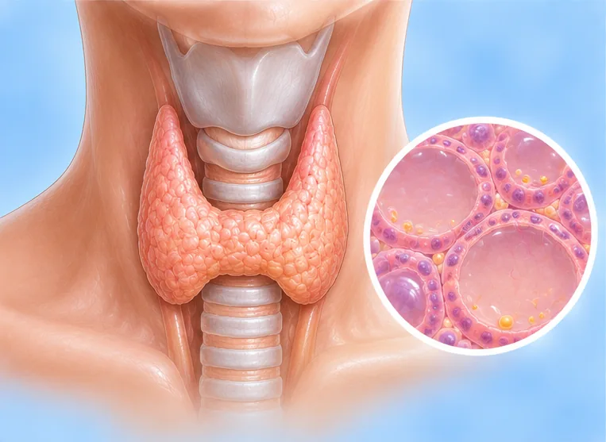

甲状腺功能减退
甲状腺分泌的激素太少，身体的能量消耗随之变慢
这是什么
颈部前方的甲状腺分泌的甲状腺激素太少，身体变得迟缓，你可能会觉得疲倦、怕冷、没精神；简单的验血就可以检查。
- 颈部的甲状腺
- 女性较常见
- 疲倦、怕冷、变迟缓
- 就诊科室
- 家庭医生；必要时看内分泌科医生
- 多发人群
- 女性和老年人；也见于甲状腺手术或颈部放射线照射之后
- 传染性
- 不传染
- 病程
- 常为长期状况，需要定期复查；医生可以说明各种选择
常见表现

总是疲劳疲劳 总是怕冷畏寒 
体重容易增加体重增加 
便秘便秘 
皮肤干燥脱屑皮肤干燥 脱发脱发
为什么会这样

某些药物的副作用药物不良反应 
家族遗传遗传易感性
其他原因
- 身体自身的防御系统攻击甲状腺（自身免疫性甲状腺炎），这是常见原因
- 甲状腺手术，或颈部放射线照射，或因其他甲状腺问题使用放射性碘
- 长期饮食中碘太少，有时也可能是太多
- 少见情况下，是大脑中的脑垂体出了问题
出现这些情况请先看医生
- 非常嗜睡、意识混乱或难以唤醒，同时身体非常冰冷或呼吸缓慢：拨打999
- 胸痛、昏倒或呼吸困难：拨打999或立即去医院
- 情绪低落久久不好转：告诉医生；有任何伤害自己的念头：立即看医生或拨打999
- 颈部肿胀越来越大，或吞咽、呼吸困难
- 即使按医嘱服药，疲倦、体重增加或怕冷仍越来越严重
- 怀孕或计划怀孕：请看医生，因为甲状腺指标对你和宝宝都很重要
- 婴儿或儿童非常嗜睡、吃奶差或生长缓慢：请尽快看医生
如果有以上情况，请先看医生，再来做调理。
本页只是一般性的健康资讯。请继续按时服用平常的药物，并继续看医生。
请继续日常治疗
请继续按医嘱服药，并按时复诊。我们的调理是温和的辅助，不能代替医疗。
日常护理

定期看医生复查定期随访 
咨询药剂师药剂师建议 
饮食均衡健康均衡饮食 
每天保持活动规律运动
更多自我照顾的方法
- 如果医生给你开了甲状腺药，请严格按医嘱服用，不要自行停药
- 如果便秘，多吃蔬菜水果等高纤维食物，并多喝水
告诉理疗师
- 心脏病
- 高血压
- 怀孕
- 心脏起搏器或金属植入物
- 最近颈部受伤或手术
调理师会在开始前和你确认这一项。
常见问题
甲状腺功能减退是什么？
甲状腺分泌的激素太少，身体的能量消耗随之变慢。颈部前方的甲状腺分泌的甲状腺激素太少，身体变得迟缓，你可能会觉得疲倦、怕冷、没精神；简单的验血就可以检查。
甲状腺功能减退有哪些常见表现？
总是疲劳；总是怕冷；体重容易增加；便秘；皮肤干燥脱屑；脱发
为什么会有甲状腺功能减退？
某些药物的副作用；家族遗传
有甲状腺功能减退要怎么照顾自己？
定期看医生复查；咨询药剂师；饮食均衡健康；每天保持活动
AI Body Master 的调理对甲状腺功能减退有帮助吗？
调理是温和的无针经络养生辅助，不能治疗或治愈甲状腺功能减退，也不能代替药物或医生。开始前请告诉理疗师。
相关疾病
参考资料: General information based on public health sources such as Mayo Clinic, NHS, Cleveland Clinic and NCBI StatPearls.
页面更新: 2026-11-01